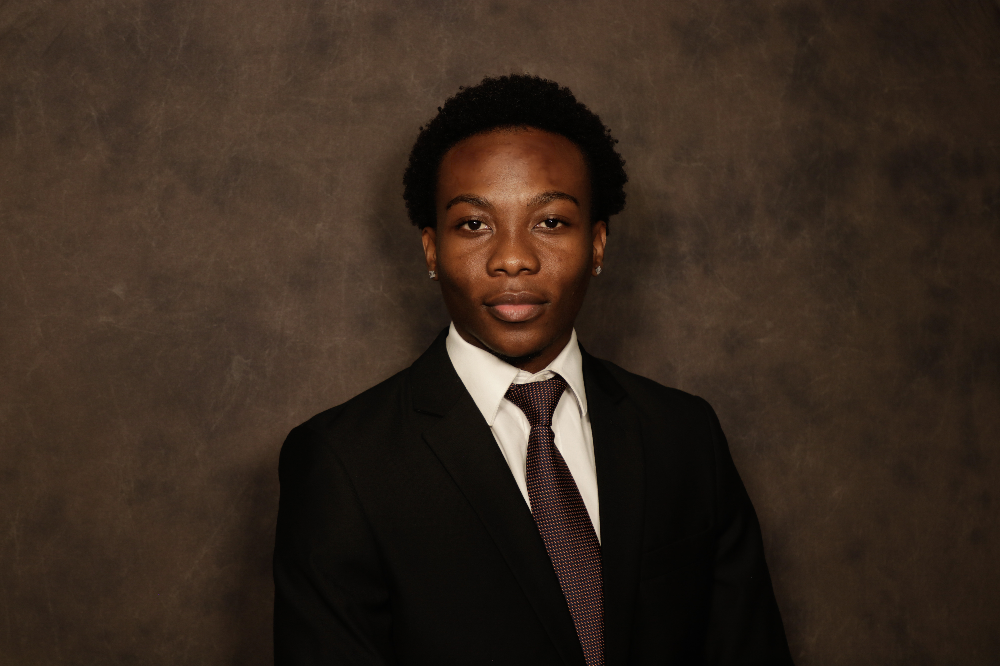
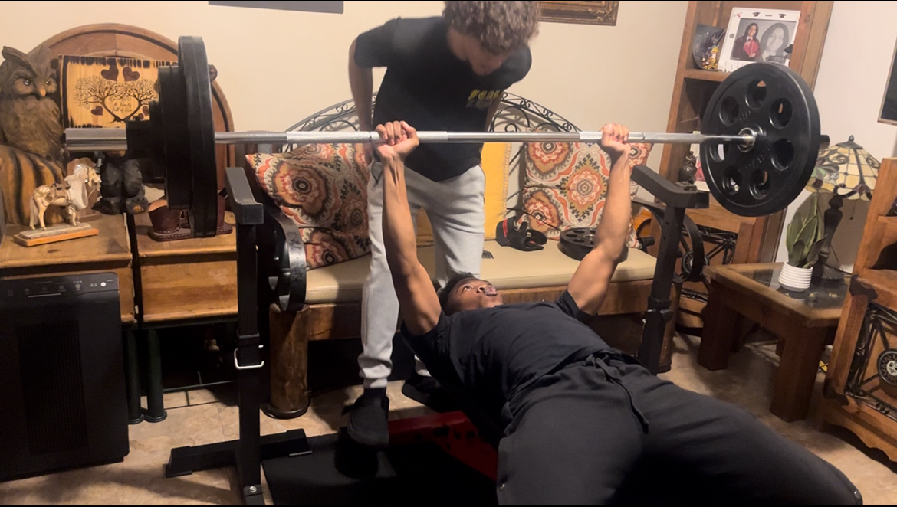
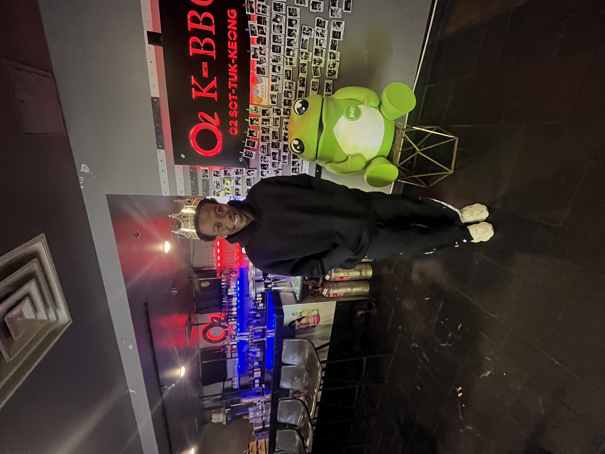
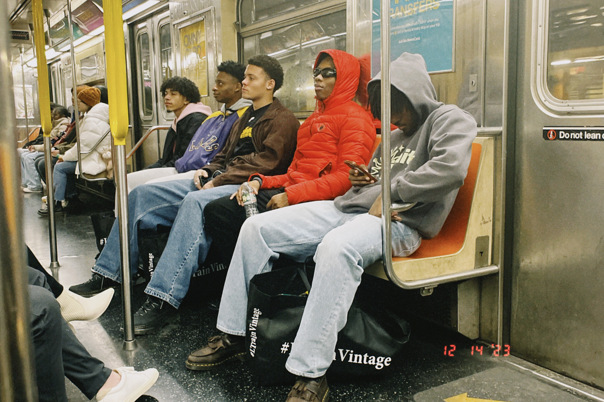
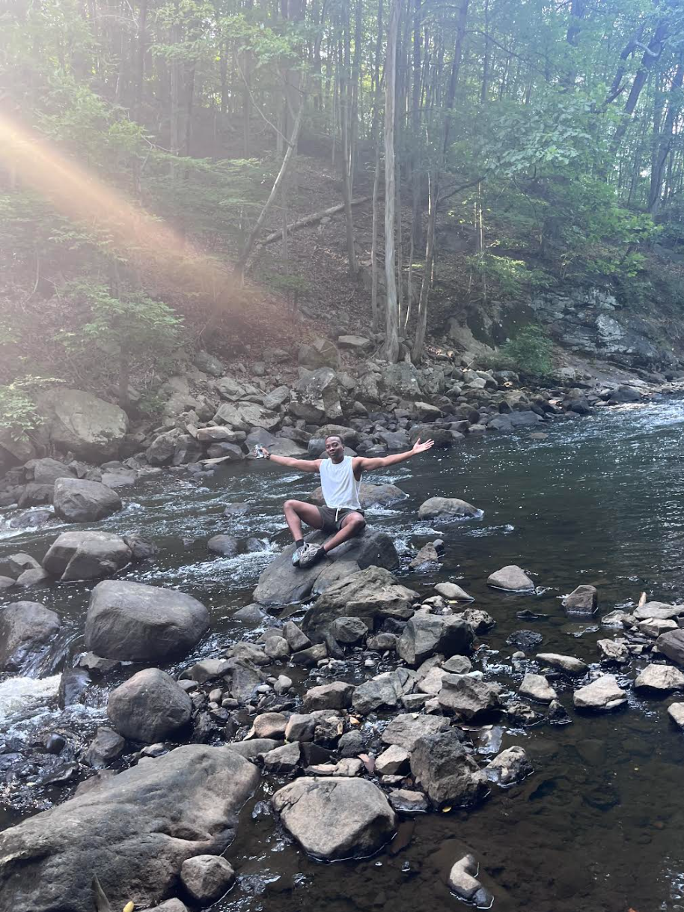

Oct 2026 to now
Research Assistant
Swissler Innovative Robotics Lab, NJIT
I design circuit subsystems and PCBs in KiCad for modular robots that assemble themselves into swarms, then solder, assemble and debug the boards on the bench.
Electrical engineering at NJIT, class of 2027
I like learning about and making cool things, mostly centered on electronics: power electronics, optoelectronics and high-speed electronics. This page collects the hardware I've designed, simulated, built and flown.
Current work first. Select a row to open its spec sheet.
openEMS, COMSOL, KiCad
A continuous-wave Doppler radar built from discrete RF parts instead of a radar module, so every stage of the front end is my own design. It measures both the speed and the direction of a moving target.
Next: fabricate the antenna board, measure it on a network analyzer and tune the oscillator to the measured resonance.
Signal path
NJIT RockSat, Teensy 4.1
Stella II is this year's NJIT RockSat mission. A stationary payload called HUB ejects a small cube, CUBE, 85 seconds into the flight. Once free, CUBE stops its own tumbling and lines itself up with Earth's magnetic field using three reaction wheels, while two spring-loaded booms hold magnetometers away from the electronics.
I manage the electrical team and I'm designing CUBE's flight computer, the board that reads every sensor, logs the flight and talks to HUB by radio.
Data path
TI BQ76942, Multisim, CAN
A four-cell lithium-ion battery management module aimed at electric aircraft. Instead of burning off charge from the fullest cell, it moves energy between cells through an inductor.
Balancing path
Pixhawk 6X, ArduPilot QuadPlane, ExpressLRS, Creo, Fusion
An aircraft that takes off like a quadcopter, then tilts its rotors forward and flies on its wing. I proposed the concept, put together the team and lead the electromechanical side.
Power path
SPICE simulation, link budget analysis
A fiber-optic sensor network that replaces copper signal wires on a small aircraft, so sensor data is immune to electrical noise from servos and motors and each node is electrically isolated.
I started this expecting fiber to be faster. My own latency analysis showed propagation delay was about six orders of magnitude below the dominant term, so I dropped that idea and rebuilt the project around noise immunity.
Receive path
Multisim
A single-phase inverter that steps a 12 V supply up to a 36 V bus, then shapes it into a clean 60 Hz sine wave.
Power path
Altium, C++, bench instruments
A student-built payload that flew on a NASA sounding rocket and measured electron density in the ionosphere with a Langmuir probe, with electrical, mechanical and software subteams working to one launch date.
KiCad, ESP32, nRF24L01
A flying wing that I control over a radio link I built myself instead of buying an off-the-shelf transmitter and receiver.
KiCad
A power distribution board for general testing, with control electronics on the same board as the high-current paths.
BJTs, LM311 comparators, ESP32, Multisim
Three lab builds from my analog and digital circuits courses.
Research in NJIT labs on robot swarms, autonomous drones and robotic hands, and a NASA rocket team.
Oct 2026 to now
Swissler Innovative Robotics Lab, NJIT
I design circuit subsystems and PCBs in KiCad for modular robots that assemble themselves into swarms, then solder, assemble and debug the boards on the bench.
Jun 2025 to now
Network and Intelligent Systems Lab, NJIT
Our team wrote "EcoFlight: Low-Energy Path Finding Through Obstacles for Autonomous Sensing Drones," an algorithm that helps a drone choose obstacle-free paths that use less energy. It was presented at MIT URTC and published by IEEE.
After validating it in simulation, we are bringing it into real flight on a custom data-collection drone. I designed and built it, modeling its structural and payload parts in Creo, and I assemble, solder and power-check its electronics before each flight test.
Our second paper, "3D Indoor Space Sizing for Drone Flight Planning Using Stereoscopic Imagery," was accepted and presented at MIT URTC and is on its way into IEEE Xplore. Indoors there is no GPS, and LiDAR adds cost, power draw and weight, so it uses two consumer webcams 0.25 m apart to build a 3D point cloud and measure obstacles, openings and flight clearances.
Sep 2026 to now
NJIT RockSat, NASA sounding rocket program
I manage the electrical team for NJIT's RockSat payloads. Our last payload measured electron density in the ionosphere. The current mission, Stella II, ejects a cube that steadies itself and measures Earth's magnetic field, and I'm designing its flight computer. The team has 25+ members across four subteams.
May 2026 to Oct 2026
Controls, Automation and Robotics Lab, NJIT
I worked under a PhD candidate on dexterous in-hand manipulation for humanoid robotic hands, one of the problems standing between today's robots and ones that can make you an omelet or fold your laundry. I designed linkage-driven finger mechanisms and actuator mounts for a robotic hand in Creo, reviewed the grasping and control literature, and scoped simulation of finger motion and grasping in MuJoCo.
Altium, KiCad, Multisim, LTspice, openEMS, COMSOL, MATLAB, Simulink, Creo Parametric
Oscilloscope, Waveform Generator, Multimeter, Power Supply, Spectrum Analyzer, Logic Analyzer
Python, C++, Linux, UART, I2C, CAN, SPI
High Speed Electronics (RF), Power Electronics, Electronics Design, Advanced & Feedback Controls

I was born and raised in Zimbabwe, and I'm bilingual in English and Shona. A lot of who I am comes from that background. It shapes the way I think, work and connect with people.
I'm drawn to aviation, robotics and high-speed communications, and to research: working through a problem methodically until the hardware does what the math says it should.
Away from the bench I run, lift and cook, and I'll do pretty much any physical activity except the dishes. I play a lot of Microsoft Flight Simulator, No Man's Sky, GTA V and Call of Duty. I take Chipotle and Wingstop very seriously, and I still think the banana milkshake is one of humanity's best inventions.




I'm looking for hardware roles in RF, power electronics and aerospace. Email or LinkedIn is the quickest way to reach me.
© 2026 Tendai Chimuka